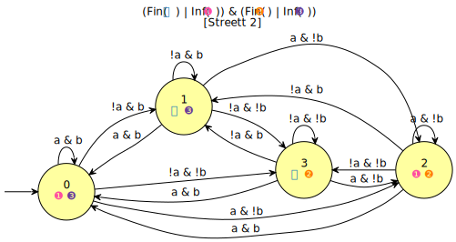

dstar2tgba
Table of Contents
This tool converts automata into transition-based generalized Büchi
automata, a.k.a., TGBA. It can also produce Büchi automata on request
(-B). It's usage is almost similar to ltl2tgba except that
instead of supplying a formula to translate, you should specify a
filename containing the automaton to convert.
In earlier version (before Spot 1.99.4) dstar2tgba was only able to
read automata written in the format output by ltl2dstar. However
nowadays it can read automata in any of the supported formats (HOA,
LBTT's format, ltl2dstar's format, and never claims). Also
dstar2tgba used to be the only tool being able to read ltl2dstar's
format, but today this format can also be read by any of the tool that
read automata. So in practice, running dstar2tgba some files...
produces the same result as running autfilt --tgba --high --small
some files....
Two quick examples
Here are some brief examples before we discuss the behavior of
dstar2tgba in more detail.
From Rabin to Büchi
The following command instructs ltl2dstar to:
- run
ltl2tgba -Dsto build a Büchi automaton for(a U b) & GFb, and then - convert that Büchi automaton into a deterministic Rabin automaton
(DRA) stored in
fagfb.
Additionally we use ltlfilt to convert our formula to the
prefix format used by ltl2dstar.
ltlfilt -f '(a U b) & GFb' -l | ltl2dstar --ltl2nba=spin:ltl2tgba@-Ds - fagfb
By looking at the file fagfb you can see the ltl2dsar actually
produced a 4-state DRA:
cat fagfb
DRA v2 explicit Comment: "Safra[NBA=3]" States: 4 Acceptance-Pairs: 1 Start: 2 AP: 2 "a" "b" --- State: 0 Acc-Sig: +0 3 3 0 0 State: 1 Acc-Sig: -0 1 1 1 1 State: 2 Acc-Sig: 1 2 0 0 State: 3 Acc-Sig: 3 3 0 0
Let's display this automaton with autfilt:
autfilt fagfb --dot=.a
We used --dot=a to display Spot's representation of the acceptance
condition (which uses the same convention as in the HOA format). The
extra dot is because we use some environment variables to produce a
more colorful output by default in these pages.
dstar2tgba can now be used to convert this DRA into a TGBA, a BA, or
a Monitor, using the same options as ltl2tgba.
For instance here is the conversion to a Büchi automaton (-B):
dstar2tgba -B fagfb -d
Note that by default the output is not complete. Use -C if you want
a complete automaton.
But we could as well require the output as a never claim for Spin (option -s):
dstar2tgba -s fagfb
never {
T0_init:
if
:: (b) -> goto accept_S0
:: ((a) && (!(b))) -> goto T0_init
fi;
accept_S0:
if
:: (b) -> goto accept_S0
:: (!(b)) -> goto T0_S2
fi;
T0_S2:
if
:: (b) -> goto accept_S0
:: (!(b)) -> goto T0_S2
fi;
}
Streett to TGBA
Here is the translation of GFa | GFb to a 4-state Streett automaton:
ltlfilt -f 'GFa & GFb' -l | ltl2dstar --automata=streett --ltl2nba=spin:ltl2tgba@-Ds - gfagfb
autfilt --dot=.a gfagfb

And now its conversion by dstar2tgba to a 4-state TGBA.
We don't pass any option to dstar2tgba because converting to TGBA is
the default:
dstar2tgba gfagfb -d
Obviously the resulting automaton could be simplified further, as the minimal TGBA for this formula has a single state. (Patches welcome…)
Details
General behavior
The dstar2tgba tool implements a 4-step process:
- read the automaton
- convert it into TGBA
- postprocess the resulting TGBA (simplifying the automaton, a degeneralizing it into a BA or Monitor if requested)
- output the resulting automaton
BTW, the above scenario is also exactly what you get with autfilt if
you run it as autfilt --tgba --high --small. (This is true only
since version 1.99.4, since both tools can now read the same file
formats.)
Controlling output
The last two steps are shared with ltl2tgba and use the same options.
The type of automaton to produce can be selected using the -B or -M
switches:
-B, --ba Büchi Automaton (implies -S)
--cobuchi, --coBuchi automaton with co-Büchi acceptance (will
recognizea superset of the input language if not
co-Büchi realizable)
-C, --complete output a complete automaton
-G, --generic any acceptance condition is allowed
-M, --monitor Monitor (accepts all finite prefixes of the given
property)
-p, --colored-parity[=any|min|max|odd|even|min odd|min even|max odd|max
even] colored automaton with parity acceptance
-P, --parity[=any|min|max|odd|even|min odd|min even|max odd|max even]
automaton with parity acceptance
-S, --state-based-acceptance, --sbacc
define the acceptance using states
--tgba Transition-based Generalized Büchi Automaton
(default)
And these may be refined by a simplification goal, should the post-processor routine had a choice to make:
-a, --any no preference, do not bother making it small or
deterministic
-D, --deterministic prefer deterministic automata (combine with
--generic to be sure to obtain a deterministic
automaton)
--small prefer small automata (default)
The effort put into post-processing can be limited with the --low or
--medium options:
--high all available optimizations (slow, default) --low minimal optimizations (fast) --medium moderate optimizations
For instance using -a --low will skip any optional post-processing,
should you find dstar2tgba too slow.
Finally, the output format can be changed with the following common ouput options:
-8, --utf8 enable UTF-8 characters in output (ignored with
--lbtt or --spin)
--check[=PROP] test for the additional property PROP and output
the result in the HOA format (implies -H). PROP
may be any prefix of 'all' (default),
'unambiguous', 'stutter-invariant', or 'strength'.
-d, --dot[=1|a|A|b|B|c|C(COLOR)|e|f(FONT)|h|k|n|N|o|r|R|s|t|v|y|+INT|<INT|#]
GraphViz's format. Add letters for (1) force
numbered states, (a) show acceptance condition,
(A) hide acceptance condition, (b) acceptance sets
as bullets, (B) bullets except for
Büchi/co-Büchi automata, (c) force circular
nodes, (C) color nodes with COLOR, (d) show
origins when known, (e) force elliptic nodes,
(f(FONT)) use FONT, (h) horizontal layout, (k) use
state labels when possible, (n) show name, (N)
hide name, (o) ordered transitions, (r) rainbow
colors for acceptance sets, (R) color acceptance
sets by Inf/Fin, (s) with SCCs, (t) force
transition-based acceptance, (v) vertical layout,
(y) split universal edges by color, (+INT) add INT
to all set numbers, (<INT) display at most INT
states, (#) show internal edge numbers
-H, --hoaf[=1.1|i|k|l|m|s|t|v] Output the automaton in HOA format
(default). Add letters to select (1.1) version
1.1 of the format, (i) use implicit labels for
complete deterministic automata, (s) prefer
state-based acceptance when possible [default],
(t) force transition-based acceptance, (m) mix
state and transition-based acceptance, (k) use
state labels when possible, (l) single-line
output, (v) verbose properties
--lbtt[=t] LBTT's format (add =t to force transition-based
acceptance even on Büchi automata)
--name=FORMAT set the name of the output automaton
-o, --output=FORMAT send output to a file named FORMAT instead of
standard output. The first automaton sent to a
file truncates it unless FORMAT starts with '>>'.
-q, --quiet suppress all normal output
-s, --spin[=6|c] Spin neverclaim (implies --ba). Add letters to
select (6) Spin's 6.2.4 style, (c) comments on
states
--stats=FORMAT, --format=FORMAT
output statistics about the automaton
The --stats options can output statistics about the input and the
output automaton, so it can be useful to search for particular
pattern.
For instance here is a complex command that will
- generate an infinite stream of random LTL formulas with
randltl, - use
ltlfiltto rewrite the W and M operators away (--remove-wm), simplify the formulas (-r), remove duplicates (u) as well as formulas that have a size less then 3 (--size-min=3), and keep only the 10 first formulas (-n 10) - loop to process each of these formula:
- print it
- then convert the formula into
ltl2dstar's input format, process it withltl2dstar(usingltl2tgbaas the actual LTL->BA transltor), and process the result withdstar2tgbato build a Büchi automaton (-B), favoring determinism if we can (-D), and finally displaying some statistics about this conversion.
The statistics displayed in this case are: %S, the number of states
of the input (Rabin) automaton, %s, the number of states of the
output (Büchi) automaton, %d, whether the output automaton is
deterministic, and %p whether the automaton is complete.
randltl -n -1 --tree-size=10..14 a b c | ltlfilt --remove-wm -r -u --size-min=3 -n 10 | while read f; do echo "$f" ltlfilt -l -f "$f" | ltl2dstar --ltl2nba=spin:ltl2tgba@-Ds - - | dstar2tgba -B --stats=' DRA: %Sst.; BA: %sst.; det.? %d; complete? %p' done
(b | Fa) R Fc DRA: 9st.; BA: 9st.; det.? 1; complete? 1 Ga U (Gc R (!a | Gc)) DRA: 7st.; BA: 7st.; det.? 0; complete? 0 GFc DRA: 3st.; BA: 3st.; det.? 1; complete? 1 !a | (a R b) DRA: 3st.; BA: 2st.; det.? 1; complete? 0 Xc R (G!c R (b | G!c)) DRA: 4st.; BA: 2st.; det.? 1; complete? 0 c & G(b | F(a & c)) DRA: 4st.; BA: 3st.; det.? 1; complete? 0 XXFc DRA: 4st.; BA: 4st.; det.? 1; complete? 1 XFc | Gb DRA: 5st.; BA: 4st.; det.? 1; complete? 1 G(((!a & Gc) | (a & F!c)) U (!a | Ga)) DRA: 6st.; BA: 5st.; det.? 1; complete? 1 a & !b DRA: 3st.; BA: 2st.; det.? 1; complete? 0
An important point you should be aware of when comparing these numbers
of states is that the deterministic automata produced by ltl2dstar
are complete, while the automata produced by dstar2tgba
(deterministic or not) are not complete by default. This can explain
a difference of one state (the so called "sink" state).
You can instruct dstar2tgba to output a complete automaton using the
--complete option (or -C for short).
Conversion of various acceptance conditions to TGBA and BA
Spot implements several acceptance conversion algorithms. There is one generic cases, with some specialized variants.
- Generic case
The most generic one, called
remove_fin()in Spot, takes an automaton with any acceptance condition, and as its name suggests, it removes all theFin(x)from the acceptance condition: the output is an automaton whose acceptance conditions is a Boolean combination ofInf(x)acceptance primitive. (Such automata with Fin-less acceptance can be easily tested for emptiness using SCC-based emptiness checks.) This algorithm works by fist converting the acceptance conditions into disjunctive normal form, and then removing anyFin(x)acceptance by adding non-deterministic jumps into clones of the SCCs that intersect setx. This is done with a few tricks that limits the numbers of clones, and that ensure that the resulting automaton uses at most one extra acceptance sets. This algorithm is not readily available fromdstar2tgba, butautfilthas an option--remove-finif you need it.From an automaton with Fin-less acceptance, one can obtain a TGBA without changing the transitions structure: take the Fin-less acceptance, transform it into conjunctive normal form (CNF), and create one new Fin-accepting set for each conjunct of the CNF. The combination of these two algorithms is implemented by the
to_generalized_buchi()function in Spot.Finally a TGBA can easily be converted into a BA with classical degeneralization algorithms (our version of that includes several SCC-based optimizations described in our SPIN'13 paper).
This generalized case is specialized for two types of acceptances that are common (Rabin and Streett).
- State-based Rabin to BA
For state-based Rabin automata, and dedicated conversion to BA is used.
The conversion implemented is a variation of Krishnan et al.'s "Deterministic ω-Automata vis-a-vis Deterministic Büchi Automata" (ISAAC'94) paper. They explain how to convert a deterministic Rabin automaton (DRA) into a deterministic Büchi automaton (DBA) when such an automaton exist. The surprising result is that when a DRA is DBA-realizable, a DBA can be obtained from the DRA without changing its transition structure.
Spot implements a slight refinement to the above technique by doing it SCC-wise: any DRA will be converted into a BA, and the determinism will be conserved only for strongly connected components where determinism can be conserved. (If some SCC is not DBA-realizable, it will be cloned into several deterministic SCC, but the jumps between these SCCs will be nondeterministic.)
This specialized conversion is built in the
remove_fin()procedure described above. - Streett to TGBA
Streett acceptance have a specialized conversion into non-deterministic TGBA. This improved conversion is automatically used by
to_generalized_buchi().When a Streett automaton uses multiple acceptance pairs, we use generalized acceptance conditions in the TGBA to limit the combinatorial explosion.
A straightforward translation from Streett to BA, as described for instance by Löding's diploma thesis, will create a BA with \(|Q|\cdot(4^n-3^n+2)\) states if the input Streett automaton has \(|Q|\) states and \(n\) acceptance pairs. Our translation to TGBA limits this to \(|Q|\cdot(2^n+1)\) states.
Sometimes, as in the example for
GFa & GFbthe output of this conversion happens to be deterministic. This is pure luck: Spot does not implement any algorithm to preserve the determinism of Streett automata.